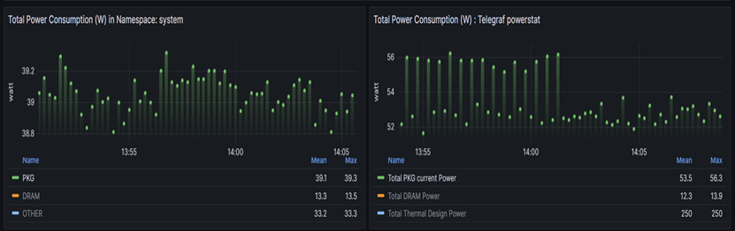

介绍
机器翻译声明
本文档由 AI 语言模型 (Claude) 从英文自动翻译而成。如发现翻译错误或不准确之处，请在 Kepler 文档项目 中提交 issue 报告问题。
Kepler（基于 Kubernetes 的高效功耗级别导出器）是一个 Prometheus 导出器。 它使用 eBPF 探测 CPU 性能计数器和 Linux 内核跟踪点 [1]， 而 Telegraf 是一个收集、处理、聚合和写入指标的代理。 [2] 本文档涵盖了将 Telegraf 与 Kepler 集成的步骤。
将 Telegraf 与 Kepler 集成的好处
将 Telegraf 与 Kepler 集成有助于用户在 Kepler 指标之上收集额外的平台级指标。 Kepler 提供有用的容器和节点指标。另一方面，通过 Telegraf，可以使用 IPMI 传感器 插件收集诸如电源供应电流输出（%）等指标。此外，它还可以帮助收集当前通过 Kepler 无法实现的 DPDK 相关指标。通过关联来自 Kepler 的功耗和 CPU 使用指标以及来自 Telegraf 的 DPDK 指标，用户将更好地了解其数据包处理应用程序的功耗使用情况， 并可以将这些见解用作识别功耗优化机会的输入。因此，Kepler 和 Telegraf 指标 一起可以服务于帮助最终用户理解和优化其各种网络应用程序功耗使用的用例。
设置

设置详情
控制平面服务器详情如下：
| 组件 | 详情 |
|---|---|
| 型号 | Intel(R) Xeon(R) Gold 6230N CPU @ 2.30GHz |
| 插槽 | 2 |
| 每插槽内核数 | 20 |
| 总内核数 | 80 |
| 软件 | Ubuntu 22.04.1 LTS |
下载并安装 Kepler
Kepler 有多种下载和安装方式。有关每个步骤的更多详细信息，请参阅 Kepler 文档。
root@: git clone https://github.com/sustainable-computing-io/kepler.git
root@: cd kepler/
root@: make build-manifest OPTS="BM_DEPLOY PROMETHEUS_DEPLOY"
root@: cd _output/generated-manifest/
root@: vi deployment.yaml
root@: kubectl apply -f _output/generated-manifest/deployment.yaml
可以通过以下命令确认 Kepler 的安装：
root@: docker ps -a | grep 'kepler'
530a71f0067f quay.io/sustainable_computing_io/kepler "/bin/sh –
c '/usr/bi…" 33 seconds ago Up 31 seconds
k8s_kepler-exporter_kepler-exporter-bzj9b_kepler_827ee818-9f5a-460c-a368-
fc90fde5d378_0
decae0dc60e2 k8s.gcr.io/pause:3.3 "/pause"
38 seconds ago Up 35 seconds
k8s_POD_kepler-exporter-bzj9b_kepler_827ee818-9f5a-460c-a368-fc90fde5d378_0
root@:~# kubectl get pod -n kepler
NAME READY STATUS RESTARTS AGE
kepler-exporter-8h8x7 1/1 Running 0 63s
kepler-exporter-bzj9b 1/1 Running 0 63s
root@:~# kubectl port-forward kepler-exporter-jdklk 9102:9102 -n kepler --address='0.0.0.0'
下载并启动 Telegraf
Telegraf 可以通过多种方式在系统上安装。这里是通过从源代码下载和构建来完成的。
Telegraf 需要 Go 版本 >=1.22，可以安装：安装 Go， Makefile 需要 GNU make。
Telegraf 与 Go 共享相同的最低要求：
- Linux 内核版本 2.6.32 或更高
- Windows 10 或更高
- FreeBSD 12 或更高
- macOS 10.15 Catalina 或更高
克隆 Telegraf 仓库：
root@:~# git clone https://github.com/influxdata/telegraf.git
从源目录运行 make build
root@:~# cd telegraf
root@:~# make build
生成 Telegraf 配置文件
root@:~# telegraf config > telegraf.conf
编辑生成的配置文件以启用所需的插件。对于此集成活动，应启用以下插件：
输入插件： Intel PowerStat 插件、 Intel PMU 插件 和 IPMI 传感器 输入
输出插件： 必须在 Telegraf 配置中启用 Prometheus 输出 插件 以便将指标存储在 Prometheus 数据库中。
以下是用于启用上述所有插件的示例配置。虽然用户可以通过注释掉相应部分来启用任何 其他所需插件。
root@:~# vi telegraf.conf
# 全局标签可以在此处以 key="value" 格式指定。
[global_tags]
# dc = "us-east-1" # 将为所有指标标记 dc=us-east-1
# rack = "1a"
## 环境变量可以用作标签，并在整个配置文件中使用
# user = "$USER"
# telegraf 代理的配置
[agent]
## 所有输入的默认数据收集间隔
interval = "10s"
## 将收集间隔舍入到 'interval'
## 即，如果 interval="10s"，则始终在 :00、:10、:20 等时间收集。
round_interval = true
## Telegraf 将以最多 metric_batch_size 个指标的批次向输出发送指标。
## 这控制 Telegraf 发送到输出插件的写入大小。
metric_batch_size = 1000
## 每个输出的最大未写入指标数。增加此值允许更长时间的输出停机时间
## 而不丢失指标，但代价是更高的最大内存使用量。
metric_buffer_limit = 10000
## 收集抖动用于通过随机量抖动收集。
## 每个插件将在收集之前休眠抖动内的随机时间。
## 这可以用于避免许多插件同时查询诸如 sysfs 等内容，
## 这可能对系统产生可测量的影响。
collection_jitter = "0s"
## 所有输出的默认刷新间隔。最大 flush_interval 将是
## flush_interval + flush_jitter
flush_interval = "10s"
## 通过随机量抖动刷新间隔。这主要是为了避免运行大量 telegraf 实例的
## 用户出现大量写入峰值。
## 即，5s 的抖动和 10s 的间隔意味着刷新将每 10-15s 发生一次
flush_jitter = "0s"
## 默认或设置为 "0s" 时，精度将设置为与收集间隔相同的时间戳顺序，
## 最大值为 1s。
## 即，当 interval = "10s" 时，precision 将为 "1s"
## 当 interval = "250ms" 时，precision 将为 "1ms"
## 精度不会用于服务输入。由每个单独的服务输入设置适当精度的时间戳。
## 有效的时间单位是 "ns"、"us"（或 "µs"）、"ms"、"s"。
precision = ""
## 在调试级别记录。
# debug = false
## 仅记录错误级别消息。
# quiet = false
## 日志目标控制日志的目标，可以是 "file"、"stderr" 或在 Windows 上的 "eventlog"。
## 设置为 "file" 时，输出文件由 "logfile" 设置确定。
# logtarget = "file"
## 使用 "file" 日志目标时要记录到的文件名。如果设置为空字符串，
## 则日志将写入 stderr。
# logfile = ""
## 日志文件将在指定的时间间隔后轮换。设置为 0 时不执行基于时间的轮换。
## 日志仅在写入时轮换，如果没有日志活动，轮换可能会延迟。
# logfile_rotation_interval = "0d"
## 当日志文件变得大于指定大小时将轮换。设置为 0 时不执行基于大小的轮换。
# logfile_rotation_max_size = "0MB"
## 要保留的最大轮换存档数，任何较旧的日志都将被删除。
## 如果设置为 -1，则不删除存档。
# logfile_rotation_max_archives = 5
## 选择记录时使用的时区或键入 'local' 表示本地时间。
## 示例：America/Chicago
# log_with_timezone = ""
## 覆盖默认主机名，如果为空则使用 os.Hostname()
hostname = ""
## 如果设置为 true，则不在 telegraf 代理中设置 "host" 标签。
omit_hostname = false
###############################################################################
# 输出插件 #
###############################################################################
# # Prometheus 客户端的配置以生成
[[outputs.prometheus_client]]
## 要监听的地址
listen = ":9273"
## 指标版本控制从 Telegraf 指标到 Prometheus 格式的映射。
## 使用 prometheus 输入时，在两个插件中使用相同的值以确保指标在
## 没有修改的情况下往返。
##
## 示例：metric_version = 1;
## metric_version = 2; 推荐版本
# metric_version = 1
###############################################################################
# 输入插件 #
###############################################################################
# # Intel PowerStat 插件支持监控平台指标（功耗、TDP）和内核指标，如温度、功耗和利用率。
[[inputs.intel_powerstat]]
## 所有全局指标始终由 Intel PowerStat 插件收集。
## 用户可以在 cpu_metrics 数组中选择插件监控哪些每 CPU 指标。
## 空数组意味着插件不会收集每 CPU 特定指标 - 在这种情况下，
## Intel PowerStat 插件仅公开平台级遥测。
#package_metrics 设置：
package_metrics = ["current_power_consumption", "current_dram_power_consumption", "thermal_design_power", "max_turbo_frequency", "uncore_frequency", "cpu_base_frequency"]
## 支持的选项：
## "cpu_frequency", "cpu_busy_frequency", "cpu_temperature", "cpu_c1_state_residency", "cpu_c6_state_residency", "cpu_busy_cycles"
cpu_metrics = ["cpu_frequency", "cpu_busy_frequency", "cpu_temperature", "cpu_c1_state_residency", "cpu_c6_state_residency", "cpu_busy_cycles"]
# Intel 性能监控单元插件公开通过 Linux Perf 子系统可用的 Intel PMU 指标
# 此插件仅支持 amd64 上的 Linux
[[inputs.intel_pmu]]
## 包含 PMU 事件定义的 JSON 文件的文件系统位置列表。
event_definitions = ["/root/.cache/pmu-events/GenuineIntel-6-55-7-core.json", "/root/.cache/pmu-events/GenuineIntel-6-55-7-uncore.json"]
## 内核事件测量实体列表。可以有多个 core_events 部分。
[[inputs.intel_pmu.core_events]]
## 要计数的事件列表。事件名称应与 event_definitions 文件中的名称匹配。
## 单个条目可以包含事件名称（不区分大小写），并增加配置选项和 perf 修饰符。
## 如果不存在，则计数提供的 event_definitions 中的所有内核事件，跳过无法解析的事件。
events = ["INST_RETIRED.ANY", "CPU_CLK_UNHALTED.THREAD_ANY:config1=0x4043200000000k"]
## 将事件计数限制为指定的内核编号。
## 如果不存在，则在所有内核上计数事件。
## 每个数组元素支持单个 "0"、多个 "0,1,2" 和范围 "0-2" 表示法。
## 示例：cores = ["0,2", "4", "12-16"]
cores = ["0"]
## 指示插件应尝试将 core_events.events 作为单个 perf 组运行。
## 如果不存在或设置为 false，每个事件单独计数。默认为 false。
## 这将可以测量的事件数量限制为每内核可用硬件计数器的最大值。
## 可能因事件类型、固定计数器的使用而有所不同。
# perf_group = false
## 可选择设置将添加到此事件组中每个测量的自定义标签值。
## 可以应用于任何事件组，与 perf_group 设置无关。
# events_tag = ""
## uncore 事件测量实体列表。可以有多个 uncore_events 部分。
[[inputs.intel_pmu.uncore_events]]
## 要计数的事件列表。事件名称应与 event_definitions 文件中的名称匹配。
## 单个条目可以包含事件名称（不区分大小写），并增加配置选项和 perf 修饰符。
## 如果不存在，则计数提供的 event_definitions 中的所有 uncore 事件，跳过无法解析的事件。
events = ["UNC_CHA_CLOCKTICKS", "UNC_CHA_TOR_OCCUPANCY.IA_MISS"]
## 将事件计数限制为指定的插槽。
## 如果不存在，则在所有插槽上计数事件。
## 每个数组元素支持单个 "0"、多个 "0,1" 和范围 "0-1" 表示法。
## 示例：sockets = ["0-2"]
sockets = ["0"]
## 指示插件应为分布在 uncore 中的同一类型的多个单元提供聚合值。
## 如果不存在或设置为 false，每个单元的事件作为单独的指标公开。默认为 false。
# aggregate_uncore_units = false
## 可选择设置将添加到此事件组中每个测量的自定义标签值。
# events_tag = ""
# 通过 IPMI 从裸机服务器读取指标
[[inputs.ipmi_sensor]]
## 可选择指定 ipmitool 可执行文件的路径
# path = "/usr/bin/ipmitool"
##
## 将 'use_sudo' 设置为 true 将使用 sudo 运行 ipmitool。
## 必须配置 sudo 以允许 telegraf 用户无密码运行 ipmitool。
use_sudo = true
##
## 可选择强制会话特权级别。可以是 CALLBACK、USER、OPERATOR、ADMINISTRATOR
# privilege = "ADMINISTRATOR"
##
## 可选择通过匹配的 url 指定一个或多个服务器
## [username[:password]@][protocol[(address)]]
## 例如
## root:passwd@lan(127.0.0.1)
##
## 如果未指定服务器，将查询本地机器传感器统计信息
##
# servers = ["USERID:PASSW0RD@lan(192.168.1.1)"]
## 推荐：使用是 'timeout' 的倍数的指标 'interval' 以避免拉取数据中的间隙或重叠
interval = "30s"
## ipmitool 命令完成的超时时间。默认为 20 秒。
timeout = "20s"
## 模式版本：（可选，默认为版本 1）
metric_version = 2
## 可选择为 IMPI 连接提供十六进制密钥。
# hex_key = ""
## 如果 ipmitool 应使用缓存
## 对我来说，在 HP G10 服务器上启用缓存时，ipmitool 运行速度快 2 到 10 倍（使用 ubuntu20.04 时）
## 如果某些传感器启动较晚，缓存文件可能无法很好地为您工作
# use_cache = false
## ipmitools 缓存文件的路径（默认为 OS 临时目录）
## 提供的路径必须存在且必须可写
# cache_path = ""
使用配置文件中定义的插件运行 Telegraf：
root@:~#./telegraf --config telegraf.conf
下载并启动 Prometheus 容器
Prometheus 可以通过多种方式在系统上安装。这里是下载并安装为容器。
创建一个从 Kepler 和 Telegraf 实例抓取的 Prometheus 配置文件：
示例 Prometheus 配置文件如下：
# 我的全局配置
global:
scrape_interval: 15s # 将抓取间隔设置为每 15 秒。默认为每 1 分钟。
evaluation_interval: 15s # 每 15 秒评估规则。默认为每 1 分钟。
# scrape_timeout 设置为全局默认值（10s）。
# 包含要抓取的确切一个端点的抓取配置：
# 这里是 Prometheus 本身。
scrape_configs:
# 作业名称添加为标签 `job=<job_name>` 到从此配置抓取的任何时间序列。
- job_name: 'kepler'
static_configs:
- targets: ['xx.xx.xx:9102']
- job_name: 'telegraf'
static_configs:
- targets: ['xx.xx.xx:9273']
使用创建的 Prometheus 配置文件运行 Prometheus 容器：
root@:~# docker run -d -p 9090:9090 -v $PWD/prometheus.yaml:/etc/prometheus/prometheus.yml prom/prometheus
在 localhost:9090 的 Prometheus GUI 上，可以确认 Prometheus 正在从 Kepler 和 Telegraf 抓取。

下载并启动 Grafana 容器
像 Prometheus 一样，Grafana 可以通过多种方式在系统上安装。这里我们安装 Grafana 的容器镜像。
root@:~# docker run -d --network host --name grafana grafana/grafana
一旦 Grafana 容器运行，在 localhost:3000 访问 Grafana GUI。使用默认凭据登录。
登录后，需要将 Prometheus 数据库作为数据源添加到 Grafana GUI 中。点击
DATA SOURCES -> Add your first data source 并选择 Prometheus -> 点击 Save and Test
仪表板
一旦 Prometheus 被添加为数据源，通过导出 Kepler-Exporter.json （Kepler 的默认 Grafana 仪表板）来创建仪表板。
可以编辑此默认 Kepler 仪表板以显示 Telegraf 指标和 Kepler 指标。
例如在下面显示的示例中，右侧显示 Telegraf 收集的功率相关指标，而左侧显示 Kepler 按命名空间划分的功率相关指标：

在 Kepler 方面：
PKG-> 代表 kepler_container_package_joules_total 指标，测量 CPU 插槽消耗的
累积能量，包括所有内核和非内核组件（例如最后级缓存、集成 GPU 和内存控制器）。
DRAM-> 代表 kepler_container_dram_joules_total 指标，描述容器在 DRAM 中
花费的总能量。
Other-> 代表 kepler_container_other_joules_total 指标，测量除 CPU 和 DRAM
之外的其他主机组件的累积能耗。通常，此指标是主机能耗（来自 acpi）减去 RAPL
Package 和 DRAM。
在 Telegraf 方面：
Total PKG current Power-> 代表 powerstat_package_current_power_consumptions 指标，展示处理器封装的当前功耗。在 Grafana 上，它是两个插槽上指标的总和，即 插槽 0 的 powerstat_package_current_power_consumptions + 插槽 1 的 powerstat_package_current_power_consumptions。
Total DRAM power -> 代表 powerstat_package_current_dram_power_consumptions 指标，描述两个插槽的 DRAM 中花费的总能量。
Total Thermal design Power -> 代表 powerstat_package_current_thermal_power_consumptions 指标，描述处理器封装可用的最大热设计功率（TDP）。在 Grafana 上，它是两个插槽上 指标的总和，即插槽 0 的 powerstat_package_current_thermal_power_consumptions + 插槽 1 的 powerstat_package_current_thermal_power_consumptions。
Kepler 方面和 Telegraf 方面的总 DRAM 功率指标数字彼此对齐（大约）。
Telegraf- IPMI 指标
在 Kepler 仪表板上，我们还提取显示电源供应电流输出 % 的 IPMI 指标。